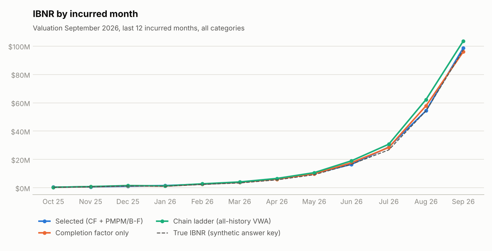
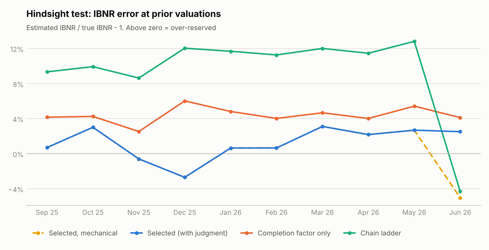
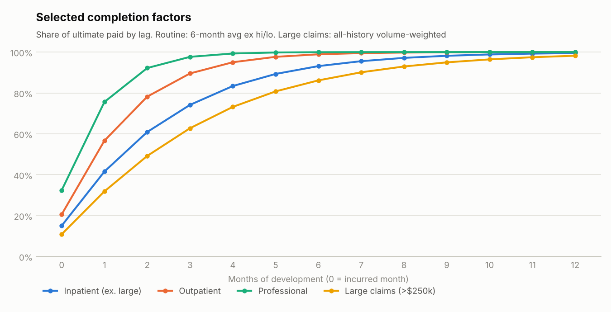
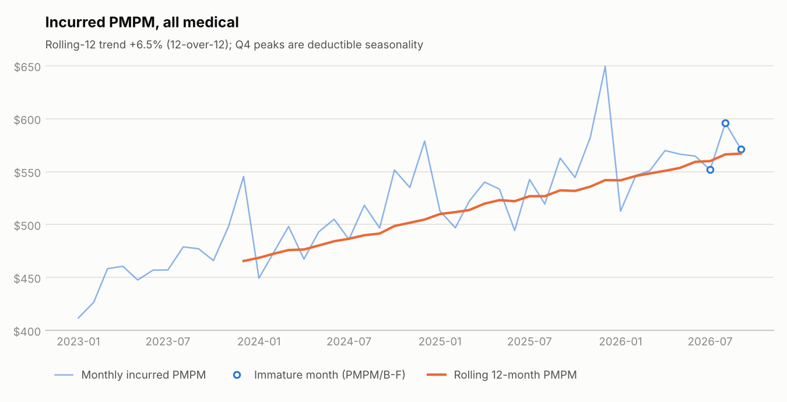

What it does
- Lag trianglesPaid claims by incurred month × months of development, by service category.
- Completion factorsRecent 6-month averages, excluding the high and low; ultimate = paid ÷ completion.
- PMPM / Bornhuetter-FergusonFor the newest 3 months, where paid claims aren't credible yet.
- Large-claim poolClaimants over $250k are reserved separately on a trended pooled PMPM.
- Actuarial judgmentExcluded diagonals, backlog restatement and factor overrides, each logged with a rationale.
- Monthly reportRoll-forward, hindsight test, paid-month diagnostic, data checks and ASOP 43 disclosures.
Results at the September 2026 valuation
The data is synthetic, so the true answer is known. Every method is scored against it at the current close and at 10 prior month-ends.
| Method | IBNR | vs. true IBNR | Hindsight MAE, 10 closes |
|---|---|---|---|
| Selected (CF + PMPM/B-F + large-claim pool + judgment) | $226.2M | +2.9% | 1.9% |
| Same, mechanical (no judgment) | $225.4M | +2.5% | 2.1% |
| Completion factor only | $227.6M | +3.5% | 4.4% |
| Chain ladder (all-history volume-weighted) | $245.5M | +11.6% | 10.3% |
The chain ladder over-reserves by about 10% because claims now pay faster than they used to. All-history factors overstate the remaining runout; recent-average completion factors track the change.

Actuarial judgment
Every departure from the formula lives in selections.json with a written reason, and the report prints it.
A selection only applies to closes on or after the month it references, so the hindsight test uses only what was knowable at each close.

| Selection | Rationale |
|---|---|
| Exclude paid month 2026-06 from link-ratio averages | Claims operations reported a processing slowdown in June 2026 (claims system migration). The paid-month diagnostic shows June payments at 87% of expected. Link ratios on this diagonal understate development and are excluded from the averages. |
| Exclude paid month 2026-07 from link-ratio averages | Catch-up of the June backlog: July payments ran 128% of expected. Link ratios on this diagonal overstate development and are excluded from the averages. |
| Restate paid for pended backlog at the 2026-06 close | At the June 2026 close, paid-to-date on every open month is short by the delayed payments. Claims operations' pended-inventory report gives the excess pended dollars by category. Paid is grossed up by paid / (paid + excess pended) before completion factors are applied, so the backlog is reserved for rather than read as lower cost. |
Reserve by category
| Category | Paid to date | IBNR | Margin | CAE | Total liability |
|---|---|---|---|---|---|
| Inpatient (ex. large) | $922.9M | $65.1M | $4.9M | $1.8M | $71.8M |
| Outpatient | $1,494.3M | $71.9M | $5.4M | $1.9M | $79.2M |
| Professional | $1,655.6M | $45.7M | $3.4M | $1.2M | $50.3M |
| Large claims (>$250k) | $406.6M | $43.6M | $3.3M | $1.2M | $48.0M |
| Total | $4,479.5M | $226.2M | $17.0M | $6.1M | $249.3M |

PMPM trend
A log-linear regression with calendar-month seasonality sets the expected cost for immature months. Deductibles make Q1 run low and Q4 high. The book's cost level, trend and large-claim frequency are checked against the Milliman Medical Index, PwC's medical cost trend survey, and published high-cost-claimant studies.

Validation
- Published benchmark. The chain ladder and Mack standard errors reproduce the Taylor-Ashe (1983) results used by Mack (1993) and R's
ChainLadder. - Excel ties to Python. The live workbook is recalculated in CI and ties to the Python engine; an override typed into the workbook matches the same override in Python.
- Known truth. Every prior close is re-run on the data as it stood then and scored against true IBNR.
- Data checks. 7 of 7 reconciliation checks pass: the extract ties to the triangles, dates are valid, membership is complete, large claims sit within inpatient.
Outputs
- Reserve report: summary, methodology, selections, trend, roll-forward, hindsight, diagnostics, ASOP 43 disclosures.
- Live Excel model: every factor and reserve is a formula, with yellow override cells.
- Exhibits workbook: triangles, link ratios, Mack detail, roll-forward, hindsight, data checks.
- Source code and tests: Python, run with
python -m ibnr.